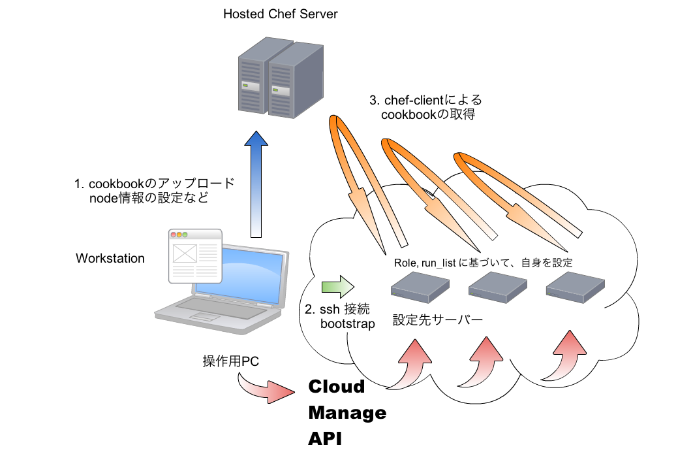
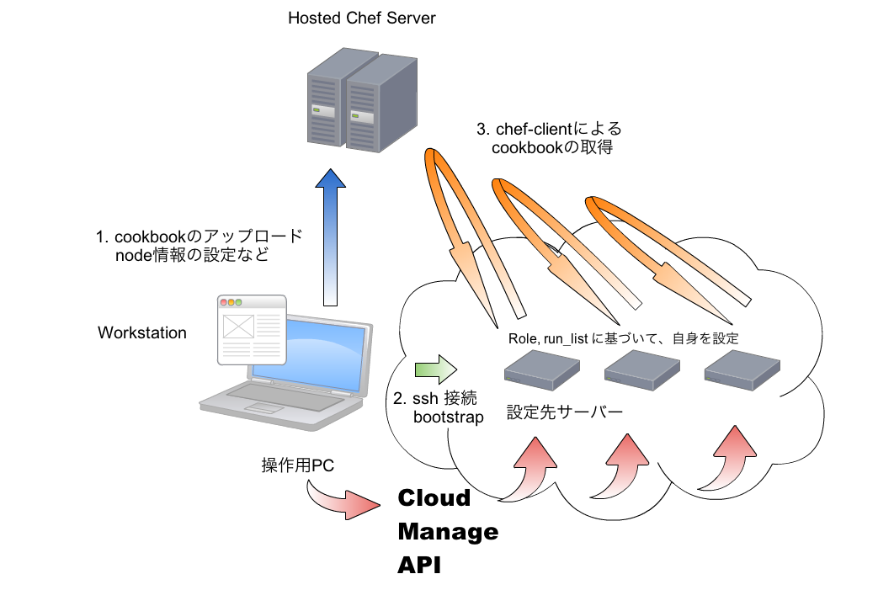

Chef ServerとClient & Nodeの関係¶

- clients = nodes + workstaritons
- workstationには、knifeとその機能拡張のrubyCLIがインストールされる
« 問題解決への取り組み :: コンテンツ :: Chefの利用メリット »

- clients = nodes + workstaritons
- workstationには、knifeとその機能拡張のrubyCLIがインストールされる
« 問題解決への取り組み :: コンテンツ :: Chefの利用メリット »